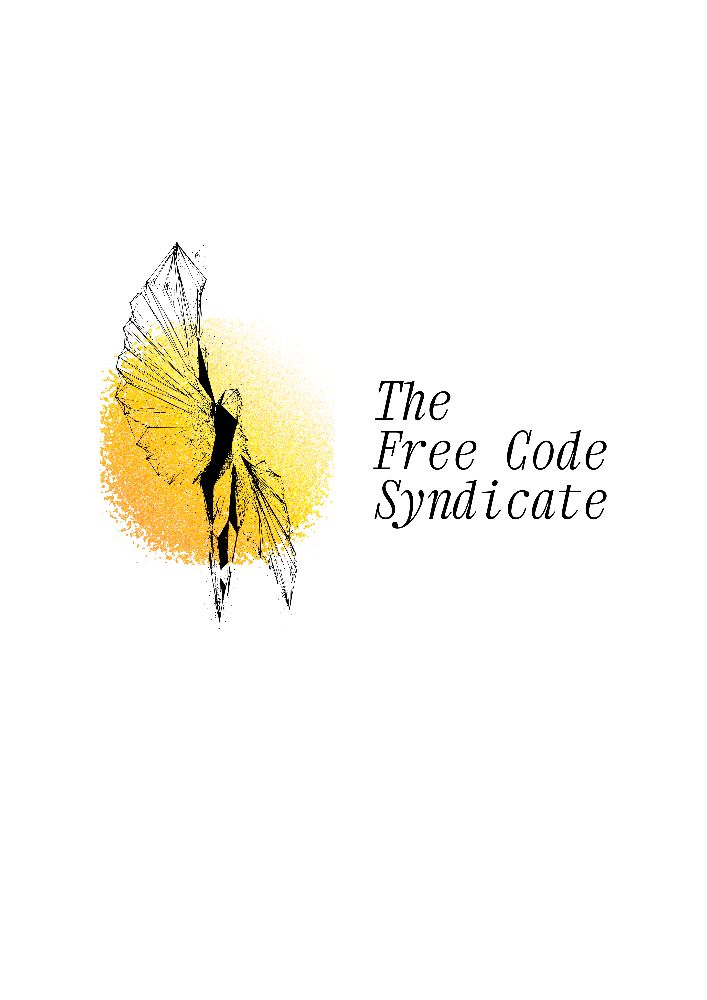
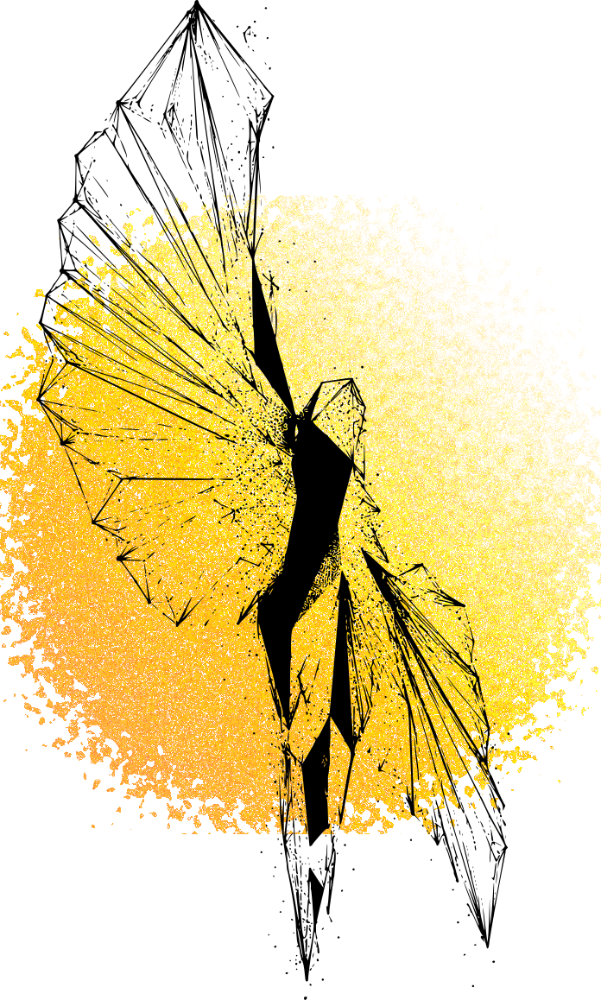

Public learning material.
Notes, repositories, reading lists, reviews, and tests are common records. They must be easy to find and hard to hide.

RFC 0001 / public rule
A public note on free code, shared study, and work that can be read, changed, and kept alive by others.
The Free Code Syndicate holds one clear line: software is a right, not a privilege.
We write, read, test, break, and study code in public. Knowledge must not sit behind a locked door. A person who wants to learn must be able to start.
This page follows the same rule. Its source can be read, changed, and reviewed. The repository list and group list come from public data, so the record can stay close to the work.
"Sapere aude." — Immanuel Kant
Notes, repositories, reading lists, reviews, and tests are common records. They must be easy to find and hard to hide.
We prefer basic ideas, work that can be repeated, small changes, and text that remains useful after the chat ends.
A project must teach, solve a real problem, or make the next person's path less dark.
The mark is inspired by Icarus. We do not read his flight only as a warning. We read it as a refusal to live low when the mind asks for height.
Icarus was right to rise. A fall can wound the body, but fear can close the sky before the first wing opens. We accept failure when it comes from a true attempt. It is better to meet the sun and fall than to never know what height demands.
"Never regret thy fall, O Icarus of the fearless flight. For the greatest tragedy of them all is never to feel the burning light." — attributed to Oscar Wilde

These rules are plain by design. They are small enough to remember and firm enough to protect the work.
PUBLIC RECORD
NO PRIVATE GATE
This list comes from github.com/TheFreeCodeSyndicate. It changes when the public repositories change. The record should follow the source.
Reading repository list
Study groups move slowly through one subject. They begin with first principles and end with public notes, code, or questions.
"There is no royal road to geometry." — Euclid
Permission is not the first step. Useful work is the first step. Pick a small task, finish it, and leave a clear path for the next person.
State what changed, what failed, what was learned, and what still needs hands. A short true note is better than long silence.
Maintainers keep the public record usable. They review, repair, answer, and decide when silence would harm the work.
Reading maintainer profiles
There is no form and no gate. Choose a room. State your purpose.